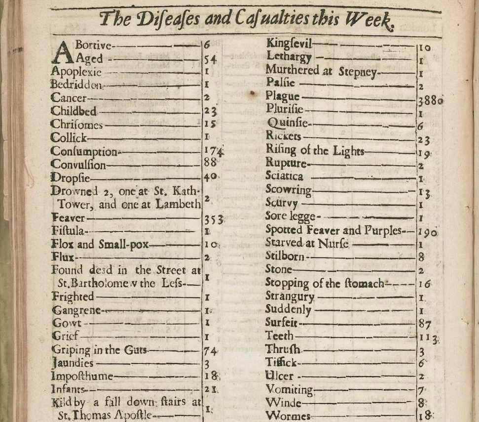
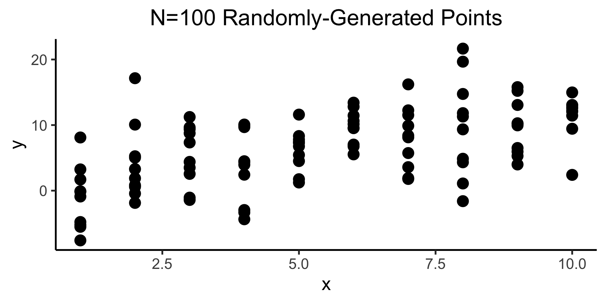
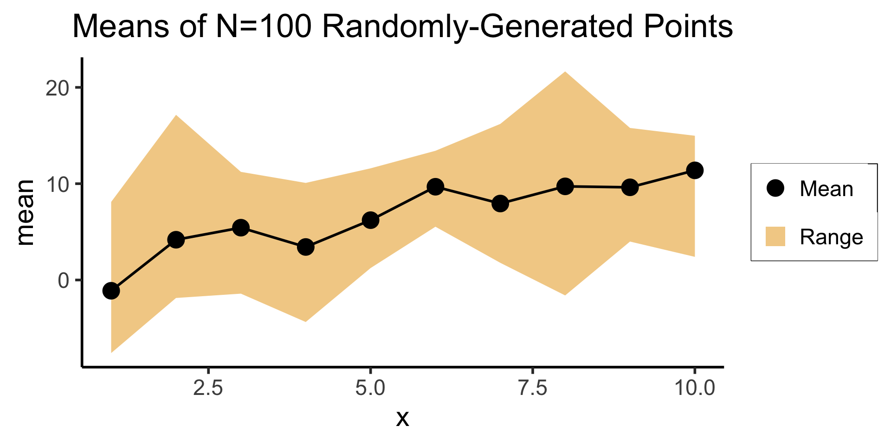
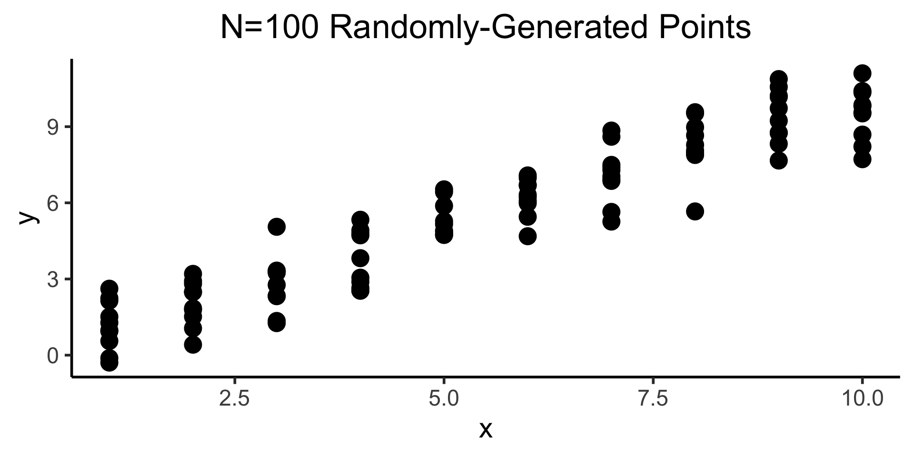
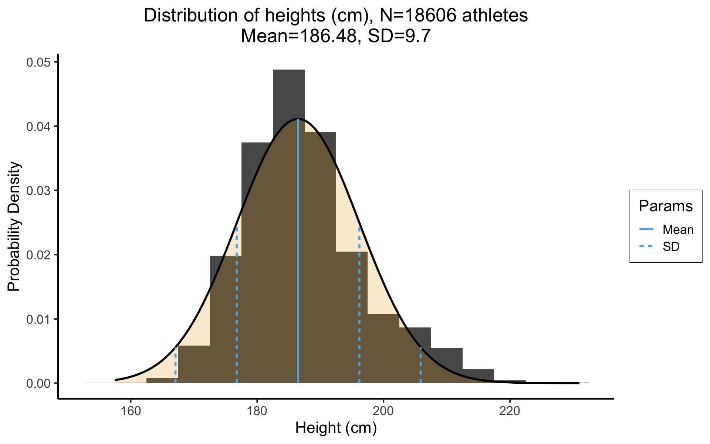

digraphgrid{graph[overlap=true,scale=0.2,newrank=true]nodesep=1.0ranksep=1.0rankdir="LR"nodedir="LR"scale=0.2node[style="filled",color=black,fillcolor=lightblue]subgraphcluster_01{label="\"Nature\"";Obs[label="Thing(s) we can see"];Und[label="Underlying processes",fillcolor=white]}{Und->Model[dir=back,style=dashed];Model->Obs[style=dashed];}{rank=source;Und->Obs[constraint=false];}subgraphcluster_02{label="\"Science\""Model[style=dashed];}}
Depressing but true origin of statistics (as opposed to probability): the Plague 😷
Ground Truth: The Great Plague (Lord Have Mercy on London, Unknown Artist, circa 1665, via Wikimedia Commons)

Noisy Data (Recorded amidst chaos): London Bill of Mortality, 1665 (Public Domain, Wellcome Collection)
Random Variables
In algebra, to solve problems we work with variables
In probability theory, to solve problems we work with random variables
Recall the difference between random and deterministic: \(A = \pi r^2\) tells us that, given a value of \(r\), we can solve for the unique value of \(A\)
In probability theory, however, there is no one “true” value of a random variable \(X\).
Let \(X = f(N)\) mean that \(X\) is the result of a rolled die, where the die has \(N\) sides.
Plugging in \(N = 6\) (standard 6-sided die) still doesn’t mean we know “the” value of \(X\). However, (if the die is fair) we do know
Many complicated definitions, often misleading or unintuitive!
How I want you to remember: How many possible values between two known values?
Discrete: e.g., number of siblings
I have 2 siblings, you have 3 siblings… How many values (sibling counts) in between?
Continuous: e.g., temperature
It is 27.0° C in my room, 28.0° C in your room… How many values (temperatures) in between?
So, if \(X\) is the result of a rolled die, is \(X\) discrete or continuous? How many values can be rolled between 3 and 4?
Thinking About Independence
We’ll define it formally later; for now, this is our working definition:
Working Definition: Independence
Two random variables \(X\) and \(Y\) are independent if learning information about \(X\) does not give you information about the value of \(Y\), or vice-versa.
Combinatorics
Naïve Definition of Probability
Sample Space: The set of all possible outcomes of an experiment
Event: A subset of the sample space
Naïve Definition of Probability
Given a sample space \(S\), and an event \(E \subset S\),
The event\(E_1 = \{HT\}\) can be confused with the outcome\(HT\).
So, try to remember instead the event\(E_2 = \{TH, HT, HH\}\): it is more clear, in this case, how this event does not correspond to any individual outcome
Back to the Naïve Definition
Naïve Definition of Probability
Given a sample space \(S\), and an event \(E \subset S\),
The naïve definition tells us that probabilities are just ratios of counts:
Count the number of ways the event \(E\) can happen, count the total number of things that can happen, and divide!
This is why we begin studying probability by studying combinatorics: the mathematics of counting
Combinatorics: Ice Cream Possibilities
The \(6 = 2 \cdot 3\) possible cone+flavor combinations which can result from choosing a flavor first and a cone type second.
The \(6 = 3 \cdot 2\) possible cone+flavor combinations which can result from choosing a flavor first and a cone type second.
Grouping vs. Ordering
In standard statistics/combinatorics introductions you’ll learn different counting formulas for when order matters vs. when order doesn’t matter
This is not a mathematical distinction so much as a pragmatic distinction: what are you trying to accomplish by counting?
Problems with extremely similar descriptions can differ in small detail, so that the units you need to distinguish between in one version differ from the units you need to distinguish between in the other.
Does Order Matter?
Example: Student Government vs. Student Sports
Consider a school where students can either try out for the swim team or run for a position in the student government
The swim team has 4 slots, but slots aren’t differentiated: you’re either on the team (one of the 4 chosen students) or not
The student government also has 4 slots, but there is a difference between the slots: first slot is President, second is Vice President, third is Secretary, and fourth is Treasurer.
Simple case (for intuition): the school only has 4 students. In this case, how many ways are there to form the swim team? What about the student government?
Swim team: \(1\)way. You have only one choice, to let all 4 students onto the team
Student government: \(4 \cdot 3 \cdot 2 \cdot 1 = 24\)ways. You have to let all 4 students in, but you have a choice of who is President, Vice President, Secretary, and Treasurer
How did we get \(4 \cdot 3 \cdot 2 \cdot 1\)? (Think about the ice cream example…)
Start by choosing the President: 4 choices
Now choose the Vice President: only 3 students left to choose from
Now choose the Secretary: only 2 students left to choose from
Now choose the Treasurer: only 1 student left to choose from
Permutations vs. Combinations
Permutations: How many ways can I choose groups of size \(k\) out of \(n\) total objects, where order within groups matters: \(P_{n,k}\) (sometimes written \(_nP_k\)).
In this case, we want to count \((a,b)\) and \((b,a)\) as two separate groups
Combinations: How many ways can I choose groups of size \(k\) out of \(n\) total objects, where order in the groups doesn’t matter: \(C_{n,k}\) (sometimes written \(_nC_k,\binom{n}{k}\)).
In this case, we don’t want to count \((a, b)\) and \((b, a)\) as two separate groups…
Key point: you don’t have to remember these as two separate formulas!
The number of combinations is based on the number of permutations, but corrected for double counting: e.g., corrected for the fact that \((a,b) \neq (b,a)\) when counting permutations but \((a,b) = (b,a)\) when counting combinations.
Boils down to: can the same object be included in my sample more than once?
Without Replacement
With Replacement
Most statistical problems: “Check off” objects as you collect data about them, so that each observation in your data is unique
Very special (but very important!) set of statistical problems: allow objects to appear in your sample multiple times, to “squeeze” more information out of the sample (called Bootstrapping—much more on this later in the course!)
How Many Possible Samples?
Example: How Many Possible Samples?
From a population of \(N = 3\), how many ways can we take samples of size \(k = 2\)?
Without Replacement
With Replacement
\(3 \cdot 2 = 6\) ways (3 objects to choose from for first element of sample, 2 remaining objects to choose from for second element of sample)
\(3\cdot 3 = 3^2 = 9\) ways (3 objects to choose from for first element of sample, still 3 objects to choose from for second element of sample)
Result: How Many Possible Samples
From a population of size \(N\), how many ways can we take samples of size \(k\)? (Try to extrapolate from above examples before looking at answer!)
Without Replacement
With Replacement
\(\displaystyle \underbrace{N \cdot (N-1) \cdot \cdots \cdot (N - k + 1)}_{k\text{ times}} = \frac{N!}{(N - k )!}\)
\(p_1\) = “First result is \(H\)”, \(q_1\) = “First result is \(T\)”
\(p_2\) = “Second result is \(H\)”, \(q_2\) = “Second result is \(T\)”
Logical formulas:
\(f_1 = p_1 \wedge q_2\): “First result is \(H\)and second result is \(T\)”
\(f_2 = p_1 \vee q_2\): “First result is \(H\)or second result is \(T\)”
\(f_3 = \neg p_1\): “First result is not\(H\)”
The issue?: We don’t know, until after the coins have been flipped, whether these are true or false!
But, we should still be able to say something about their likelihood, for example, whether \(f_1\) or \(f_2\) is more likely to happen… Enter probability theory!
Logic \(\rightarrow\) Probability
Probability theory lets us reason about the uncertainty surrounding logical predicates like \(p\) and \(q\), by:
encoding them as sets of possibilities\(P\) and \(Q\), and
representing the uncertainty around any given possibility using a probability measure\(\Pr: S \mapsto [0,1]\),
thus allowing us to reason about
the likelihood of these set-encoded predicates on their own: \(\Pr(P)\) and \(\Pr(Q)\), but also
their logical connections: \(\Pr(p \wedge q) = \Pr(P \cap Q)\), \(\Pr(\neg p) = \Pr(P^c)\), and so on.
Flipping Two Coins: Logic \(\rightarrow\) Probability
Returning to the two coins example: we can look at the predicates and see that they exhaust all possibilities, so that we can define a sample space\(S = \{TT, TH, HT, HH\}\) of all possible outcomes of our coin-flipping experiment, noting that \(|S| = 4\), so there are 4 possible outcomes.
Then we can associate each predicate with an event, a subset of the sample space, and use our naïve definition to compute the probability of these events:
Notice that, in the four rows of the previous table, we were only computing the probabilities of “simple” events: events corresponding to a single predicate
But we promised that probability theory lets us compute probabilities for logical formulas as well! …The magic of encoding events as sets becomes clear:
Since we know probabilities of the “simple” events \(P_1\), \(Q_1\), \(P_2\), \(Q_2\), we don’t need to “look inside them”! Just take the probabilities and multiply/add/subtract as needed:
This deep connection between the three fields means that, if we have some useful theorem or formula from one field, we can immediately put it to use in another!
For example: DeMorgan’s Laws were developed in logic (DeMorgan was a 19th-century logician), and basically just tell us how to distribute logic operators:
\[
\begin{align*}
\underbrace{\neg(p \wedge q)}_{\text{``}p\text{ and }q\text{'' is not true}} &\iff \underbrace{\neg p \vee \neg q}_{p\text{ is not true or }q\text{ is not true}} \\
\underbrace{\neg(p \vee q)}_{\text{``}p\text{ or }q\text{'' is not true}} &\iff \underbrace{\neg p \wedge \neg q}_{p\text{ is not true and }q\text{ is not true}}
\end{align*}
\]
Converting to Probability Theory
So, using the same principles we used in our coin flipping examples, we can consider events\(P\) and \(Q\), and get the following “translation” of DeMorgan’s Laws:
Logic
Set Theory
Probability Theory
\(\neg(p \wedge q) = \neg p \vee \neg q\)
\((P \cap Q)^c = P^c \cup Q^c\)
\(\Pr((P \cap Q)^c) = \Pr(P^c \cup Q^c)\)
\(\neg(p \vee q) = \neg p \wedge \neg q\)
\((P \cup Q)^c = P^c \cap Q^c\)
\(\Pr((P \cup Q)^c) = \Pr(P^c \cap Q^c)\)
Note that, since these are isomorphic to one another, we could have derived DeMorgan’s Laws from within probability theory, rather than the other way around:
Recall our discussion of random variables: used by analogy to algebra, since we can do math with them:
Just as \(2 \cdot 3\) is shorthand for \(2 + 2 + 2\), we can define \(X\) as shorthand for the possible outcomes of a random process. \[
\begin{align*}
S = \{ &\text{result of dice roll is 1}, \\
&\text{result of dice roll is 2}, \\
&\text{result of dice roll is 3}, \\
&\text{result of dice roll is 4}, \\
&\text{result of dice roll is 5}, \\
&\text{result of dice roll is 6}\} \rightsquigarrow X \in \{1,\ldots,6\}
\end{align*}
\]
Random Variables as Events
Each value \(v_X\) that a random variable \(X\) can take on gives rise to an event\(X = v_X\): the event that the random variable \(X\) takes on value \(v\).
Since \(X = v_X\) is an event, we can compute its probability \(\Pr(X = v_X)\)!
Event in words
Event in terms of RV
Result of dice roll is 1
\(X = 1\)
Result of dice roll is 2
\(X = 2\)
Result of dice roll is 3
\(X = 3\)
Result of dice roll is 4
\(X = 4\)
Result of dice roll is 5
\(X = 5\)
Result of dice roll is 6
\(X = 6\)
Doing Math with Events
We’ve seen how \(\Pr(\cdot)\) can “encode” logical expressions involving uncertain outcomes.
Even more powerful when paired with the notion of random variables: lets us also “encode” mathematical expressions involving uncertain quantities!
Consider an experiment where we roll two dice. Let \(X\) be the RV encoding the outcome of the first roll, and \(Y\) be the RV encoding the outcome of the second roll.
We can compute probabilities involving \(X\) and \(Y\) separately, e.g., \(\Pr(X = 1) = \frac{1}{6}\), but we can also reason probabilistically about mathematical expressions involving \(X\) and \(Y\)! For example, we can reason about their sum:
\[
\begin{align*}
\Pr(\text{rolls sum to 10}) &= \Pr(X + Y = 10) \\
&= \Pr(Y = 10 - X)
\end{align*}
\]
Or about how the outcome of one roll will relate to the outcome of the other:
Just remember that probability \(P(\cdot)\) is always probability of an event—random variables are just shorthand for quantifiable events.
Not all events can be simplified via random variables!
\(\text{catch a fish} \mapsto P(\text{trout}), P(\text{bass}), \ldots\)
What types of events can be quantified like this?
(Hint: It has to do with a key topic in the early weeks of both DSAN 5000 and 5100…)
Recall: Types of Variables
Categorical
No meaningful way to order values: \(\{\text{trout}, \text{bass}, \ldots \}\)
Ordinal
Can place in order (bigger, smaller), though gaps aren’t meaningful: \(\{{\color{orange}\text{great}},{\color{orange}\text{greater}},{\color{orange}\text{greatest}}\}\)
Can place in order, and gaps are meaningful \(\implies\) can do “standard” math with them! Example: \(\{{\color{blue}1},{\color{blue}2},\ldots,{\color{blue}10}\}\)
library(readr)fig_title <-"Review for a Popular Nintendo Switch Game"fig_subtitle <-"(That I definitely didn't play for >400 hours this summer...)"#score_df <- read_csv("https://gist.githubusercontent.com/jpowerj/8b2b6a50cef5a682db640e874a14646b/raw/bbe07891a90874d1fe624224c1b82212b1ac8378/totk_scores.csv")score_df <-read_csv("https://gist.githubusercontent.com/jpowerj/8b2b6a50cef5a682db640e874a14646b/raw/e3c2b9d258380e817289fbb64f91ba9ed4357d62/totk_scores.csv")mean_score <-mean(score_df$score)library(ggplot2)ggplot(score_df, aes(x=score)) +geom_histogram() +#geom_vline(xintercept=mean_score) +labs(title=fig_title,subtitle=fig_subtitle,x="Review Score",y="Number of Reviews" ) +dsan_theme("full")
library(tibble)N <-10# Each x value gets 10 y valuesx <-sort(rep(seq(1,10),10))y <- x +rnorm(length(x), 0, 5)df <-tibble(x=x,y=y)total_N <-nrow(df)ggplot(df, aes(x=x,y=y)) +geom_point(size=g_pointsize) +dsan_theme("column") +labs(title=paste0("N=",total_N," Randomly-Generated Points") )

Code
# This time, just the meanslibrary(dplyr)mean_df <- df %>%group_by(x) %>%summarize(mean=mean(y), min=min(y), max=max(y))ggplot(mean_df, aes(x=x, y=mean)) +geom_ribbon(aes(ymin=min, ymax=max, fill="ribbon"), alpha=0.5) +geom_point(aes(color="mean"), size=g_pointsize) +geom_line(size=g_linesize) +dsan_theme("half") +scale_color_manual("", values=c("mean"="black"), labels=c("mean"="Mean")) +scale_fill_manual("", values=c("ribbon"=cbPalette[1]), labels=c("ribbon"="Range")) +remove_legend_title() +labs(title=paste0("Means of N=",total_N," Randomly-Generated Points") )

Code
library(tibble)N <-100# Each x value gets 10 y valuesx <-sort(rep(seq(1,10),10))y <- x +rnorm(length(x), 0, 1)df <-tibble(x=x,y=y)total_N <-nrow(df)ggplot(df, aes(x=x,y=y)) +geom_point(size=g_pointsize) +dsan_theme("column") +labs(title=paste0("N=",total_N," Randomly-Generated Points") )

Code
# This time, just the meanslibrary(dplyr)mean_df <- df %>%group_by(x) %>%summarize(mean=mean(y), min=min(y), max=max(y))ggplot(mean_df, aes(x=x, y=mean)) +geom_ribbon(aes(ymin=min, ymax=max, fill="ribbon"), alpha=0.5) +geom_point(aes(color="mean"), size=g_pointsize) +geom_line(size=g_linesize) +dsan_theme("half") +scale_color_manual("", values=c("mean"="black"), labels=c("mean"="Mean")) +scale_fill_manual("", values=c("ribbon"=cbPalette[1]), labels=c("ribbon"="Range")) +remove_legend_title() +labs(title=paste0("Means of N=",total_N," Randomly-Generated Points") )
“RV \(X\) is normally distributed with mean\({\color{purple}\mu}\) and standard deviation\({\color{purple}\sigma}\)”
Translates to \(X \sim \mathcal{N}(\color{purple}{\mu},\color{purple}{\sigma})\)1
\(\color{purple}{\mu}\) and \(\color{purple}{\sigma}\) are parameters2: the “knobs” or “sliders” which change the location/shape of the distribution
The parameters in this case give natural summaries of the data:
\({\color{\purple}\mu}\) = center (mean), \({\color{purple}\sigma}\) = [square root of] variance around center
Mean can usually be interpreted intuitively; for standard deviation, we usually use the 68-95-99.7 rule, which will make more sense relative to some real-world data…
Real Data and the 68-95-99.7 Rule

Figure 2: Heights (cm) for 18K professional athletes
The point estimate\({\color{purple}\mu} = 186.48\) is straightforward: the average height of the athletes is 186.48cm. Using the 68-95-99.7 Rule to interpret the SD, \({\color{purple}\sigma} = 9.7\), we get:
The bivariate normal distribution represents the distribution of two normally-distributed RVs \(\mathbf{X} = [\begin{smallmatrix} X_1 & X_2\end{smallmatrix}]\), which may or may not be correlated:
By squishing all this information intro matrices, we can specify the parameters of multivariate-normally-distributedvectors of RVs similarly to how we specify single-dimensional normally-distributed RVs:
Note: In the future I’ll use the notation \(\mathbf{X}_{[a \times b]}\) to denote the dimensions of the vectors/matrices, like \(\mathbf{X}_{[k \times 1]} \sim \boldsymbol{\mathcal{N}}_k(\boldsymbol{\mu}_{[k \times 1]}, \mathbf{\Sigma}_{[k \times k]})\)
Visualizing 3D Distributions: Projection
Since most of our intuitions about plots come from 2D plots, it is extremely useful to be able to take a 3D plot like this and imagine “projecting” it down into different 2D plots:


{kind=link}
{kind=link}
{kind=link}